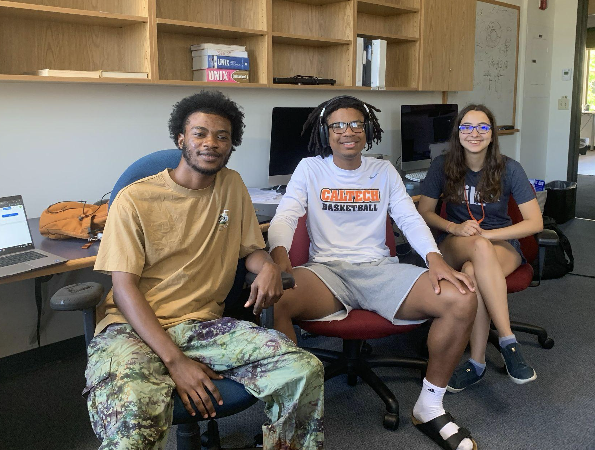
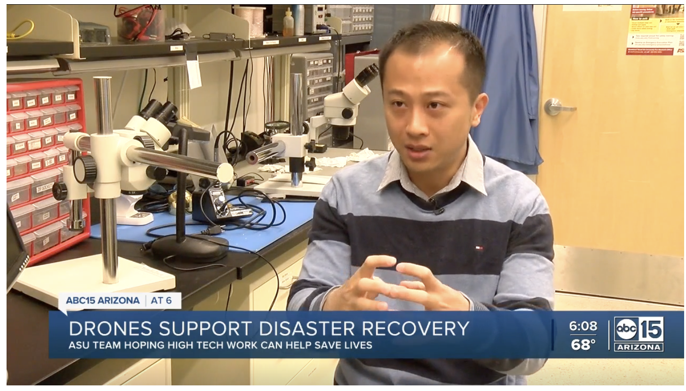

Latest announcements, research updates, and professional activities
Delivered a lecture on robotics and machine learning applications for assessing fragile geological features.
Released UAV lidar dataset assessing debris basin capacities following the 2025 Eaton Wildfire and Presidents' Day Storm in Los Angeles County, supporting emergency management and debris flow risk forecasting.

Mentored students for research projects at the Caltech First-Year Success Research Institute (FSRI): Robotic Mapping for Earth Science Studies
Published research on simulating dynamics of precariously balanced rocks for overturning and large-displacement processes using virtual shake robot technology.
Received registration grant from Computers and Structures, Inc. for the 2023 EERI Annual Meeting.
Awarded travel scholarship by EarthScope for the 2023 GAGE/SAGE Workshop.
Providing one-on-one STEM mentorship to undergraduates in partner schools through the Caltech Connection program.
Participated in Caltech Center for Teaching, Learning, and Outreach Workshop on How to Support First-generation College Students.
Recognized as SESE Safety Star Winner at Arizona State University for outstanding commitment to laboratory and field safety.
Received Graduate Student Designer Award from Arizona State University for excellence in mentorship and student development.
Awarded student scholarship by IRIS for the 2022 SAGE/GAGE Workshop.
Mentored students at the Geosciences Education & Mentorship Support (GEMS) program.
Organized an education and outreach event: "Understanding STEM Identifies from Learning Mars Exploration Missions".
Honored with the Graduate Excellence Award from Arizona State University for outstanding academic and research achievements.
Received Graduate College Online/Remote Travel Award from Arizona State University.
Received Graduate College Online/Remote Travel Award from Arizona State University.
Awarded the prestigious Fulton Fellowship from Arizona State University for exceptional academic promise and research potential.
Recognized as Outstanding Graduate from Colorado State University for exceptional academic achievements.
Achieved Meritorious Winner status in the prestigious Mathematical Contest in Modeling for outstanding mathematical modeling skills.

Featured in ABC15 News discussing how drones could play a major role in tornado disaster rescue efforts.